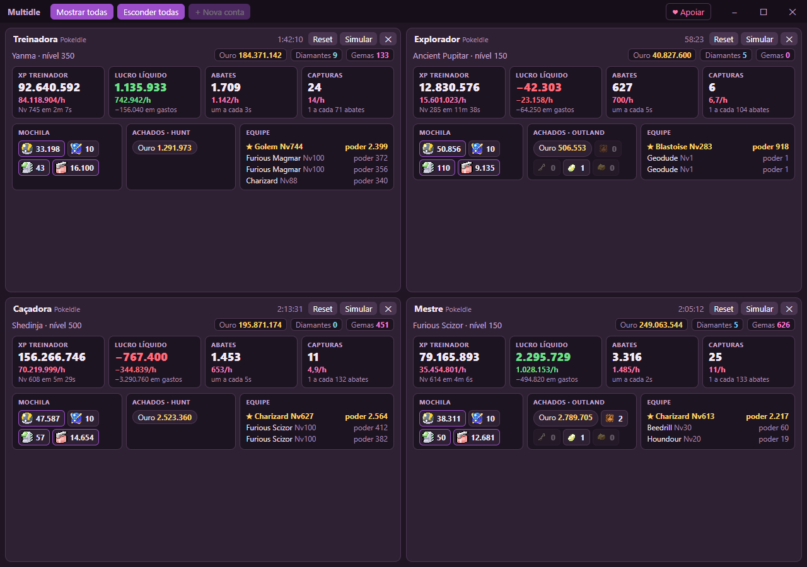

Várias contas do PokeIdle
numa janela só
Um programa leve para Windows que abre todas as suas contas lado a lado, com um painel que mostra XP, lucro, abates, mochila e equipe de cada uma — sem uma pilha de abas do navegador.

O que ele faz
Uma janela, várias contas
Cada conta tem o próprio login, isolado das outras. Clique no cartão e o jogo aparece dentro dele.
Painel de cada conta
XP e lucro por hora, abates, capturas, ouro, diamantes, gemas, bolas e poções restantes, achados da hunt e o Pokémon mais forte.
Leve de verdade
Conta escondida para de ser desenhada: com 4 contas escondidas, cerca de 1,5% de CPU — e o jogo continua caçando.
Simulador de hunt
O botão Simular leva a ficha do seu Pokémon mais forte para o simulador do Lotuz e mostra as melhores hunts.
Extensão /hunt
Se você usa a extensão /hunt for PokeIdle no Chrome ou no Edge, ela funciona dentro do Multidle também.
Não joga por você
O Multidle só mostra o site do jogo e lê o que já está na tela. Ele não envia comandos ao servidor do jogo.
⚠ Regras do PokeIdle — leia antes de usar
- No máximo 4 contas por pessoa. Mais que isso leva ao banimento de todas as contas. O Multidle não deixa adicionar a 5ª.
- A conta é pessoal: emprestar, vender, comprar ou dividir conta é proibido.
- Automações são permitidas se seguirem as mesmas regras de quem joga na mão: sem explorar falhas, sem burlar limites e sem sobrecarregar o servidor.
Resumo dos Termos do PokeIdle (versão de 12/10/2026). As regras podem mudar — confira sempre os termos atuais. Usar o Multidle é por sua conta e risco.
Como instalar
- Baixe o Multidle Setup mais recente em Releases (seção Assets).
- Execute o arquivo. Se o Windows mostrar “O Windows protegeu o computador”, clique em Mais informações → Executar assim mesmo (o instalador não é assinado digitalmente).
- Clique em + Nova conta: o Chrome ou o Edge abre para você entrar no jogo. Quando o login termina, a conta aparece no painel sozinha.
- Para atualizar, feche o Multidle e instale a versão nova por cima — as contas continuam logadas.
É preciso ter o Google Chrome ou o Microsoft Edge (usados só no login, porque o Google bloqueia login dentro de aplicativos). Seus logins ficam só no seu computador.
Apoie o projeto
O Multidle é gratuito. Se ele te ajuda e você quiser apoiar, qualquer valor ajuda a manter o projeto — é opcional e não libera nada a mais.
340355d9-a9f1-4b9c-927d-190c4cbe1a12Também pelo GitHub Sponsors. E apoie quem faz as ferramentas que o Multidle usa: o simulador de hunt (Lotuzx) e a extensão /hunt (Liang).